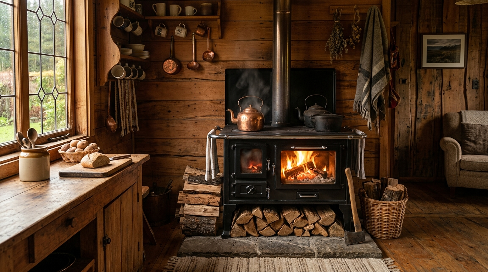
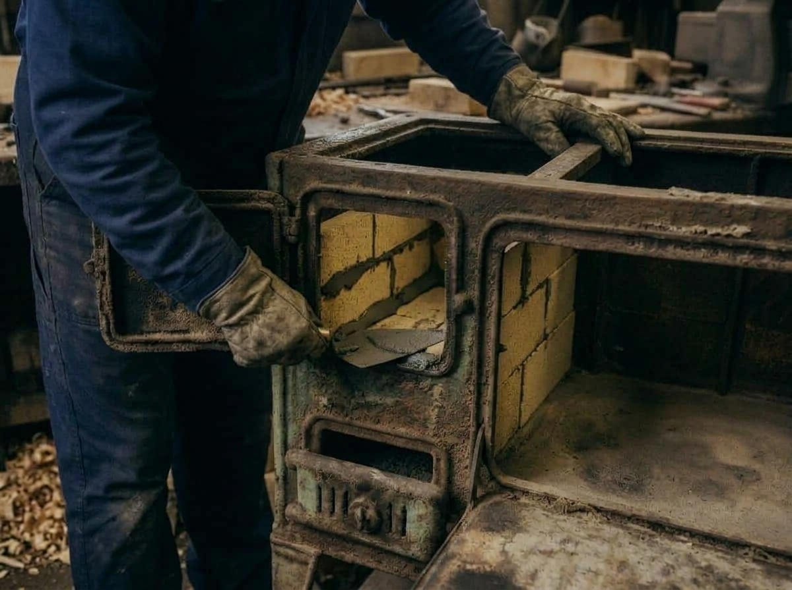

Devolvemos la firmeza, rendimiento térmico y tiraje limpio a tu cocina a leña tradicional. Solucionamos problemas de humo, cambiamos latas quemadas por planchas nuevas de buen espesor, reconstruimos cámaras de combustión con mortero y ladrillos refractarios de alta densidad y recuperamos piezas en fierro fundido para que tu cocina funcione con óptima potencia calórica y perdure por generaciones.

Latas nuevas de buen espesor y soldaduras firmes para años de uso.
Mortero térmico y ladrillos densos que acumulan calor y ahorran leña.
Ajuste de registros y sellado para eliminar el humo en la habitación.
Diagnóstico honesto y presupuesto claro sin intermediarios.
Nos dedicamos enteramente y de forma exclusiva a la recuperación, reparación y restauración integral de cocinas a leña tradicionales (tipo mueble, compactas y antiguas). Si tu cocina presenta latas quemadas, ladrillos refractarios destruidos, pérdida de tiraje o desgaste por los años y el fuego continuo, en Taller Montalba reconstruimos el artefacto desde su base para devolverle su óptima potencia calórica, un calor noble y una larga vida útil.
Pérdida de tiraje por cajas de humo rotas, perforaciones en chasis o sellos térmicos vencidos.
Chapas adelgazadas o perforadas por el fuego directo que provocan peligrosas fugas de calor.
La cocina consume excesiva leña y no retiene temperatura suficiente hacia el horno.
Cubierta desalineada, platos agrietados, puertas descolgadas o enlozado deteriorado.
Atendemos exclusivamente cocinas a leña tradicionales. Aunque presenten años de desgaste, óxido o piezas perforadas, aplicamos un proceso metódico de desarme, cambio de latas quemadas y refuerzo estructural:
Se desarma la cocina para evaluar individualmente el estado del chasis, cajas de humo y piezas de fierro fundido. Determinamos con honestidad qué componentes se salvan y cuáles deben reemplazarse.
Se sustituyen las latas, fondos o laterales quemados por planchas nuevas de acero de alto espesor, reforzando la estructura con soldaduras firmes para máxima rigidez.
Renovación completa de ladrillos refractarios y fraguado con mortero refractario térmico a 1300°C. Esto maximiza la acumulación de calor hacia el horno y reduce el consumo de leña.
Ajuste milimétrico de compuertas y registros de tiro para asegurar cero emisiones de humo al interior del hogar y una cocción equilibrada en el horno.
Poseemos las herramientas, troqueles y la experiencia de casi 40 años para reparar cualquier formato de cocina a leña tradicional sureña:
Cocinas tradicionales de 3 y 4 platos con horno amplio, las clásicas del campo y los hogares del sur para calefacción y horneado familiar.
Cocinas chicas y compactas de dimensiones reducidas, ideales para cabañas, cocinas de diario o espacios donde se requiere calor eficiente y cocción rápida.
Auténticas joyas familiares de fierro fundido macizo con décadas de antigüedad. Su valor radica en el espesor del fierro original y su belleza patrimonial.
Información técnica, plazos, materiales y cómo enviar fotos de tu cocina para evaluación.
Chacabuco 128, Galvarino, Región de La Araucanía, Chile · Atención directa en taller
Recibe un diagnóstico técnico preliminar y presupuesto honesto. Envía fotos de tu cocina para una respuesta rápida.
Diagnóstico y presupuesto directo en taller